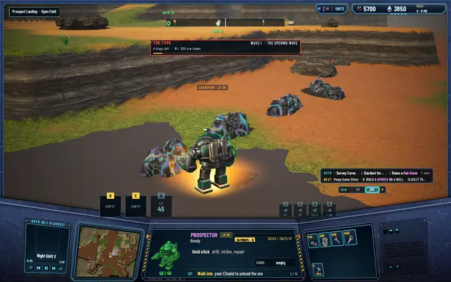
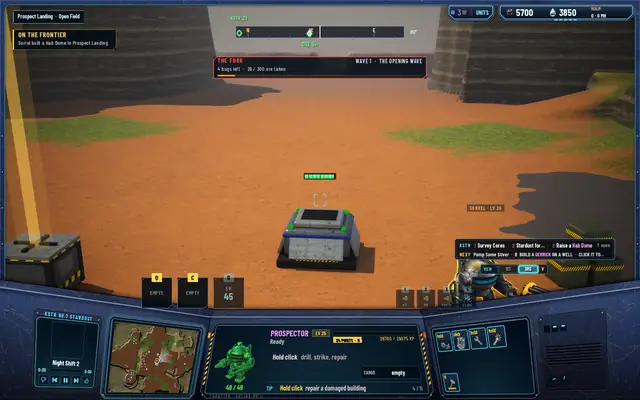
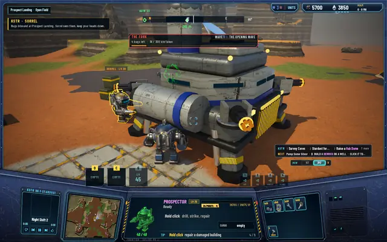
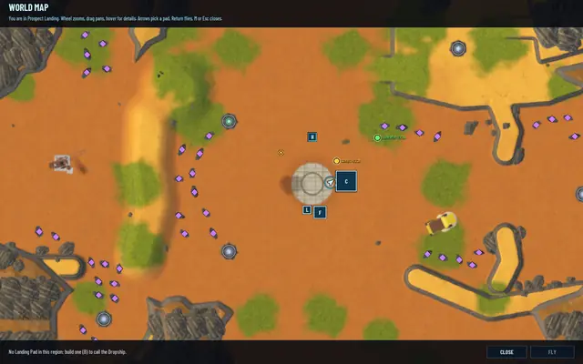
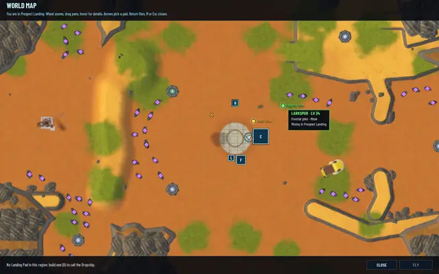
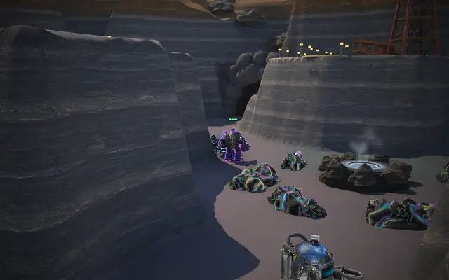
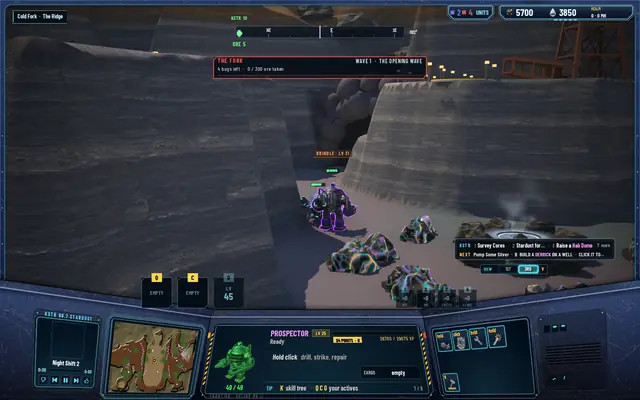
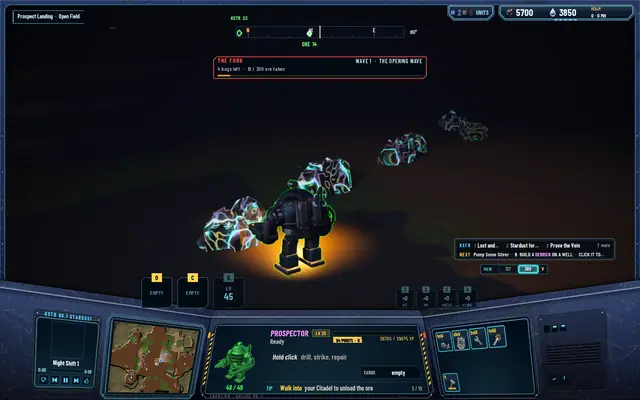

Frontier pilots: you're no longer the only one out here
A world with one pilot in it reads as empty. Now the server runs five pilots of its own in every world, each with a callsign, a paint and a habit, and they mine, build, take missions, fight bugs and talk on the radio by the same rules you play by.

This is the first piece of milestone 9, which the manager named a living frontier. The question behind it is what makes an evening worth logging in for, and the first answer is company.
Who they are
Five per world by default, up to six. Their callsigns come from a list of twelve: Vesper, Kestrel, Corvid, Tamsin, Brindle, Sorrel, Moraine, Talus, Lumen, Calder, Drover and Larkspur, in the order the world's dice give. They wear the team paints, green, gold, violet, teal and pink, and never your blue or the mercenaries' orange. Each has a habit:
- Miners drill and haul, put a Derrick on the well by their field, and raise a Hab Dome where the haul home is long.
- Builders put up realm buildings where they help: a gatling gun by a field the Brood keeps raiding, a Landing Pad in a region that has a Citadel or a canyon and no pad. Otherwise they drill to earn their keep.
- The defender joins a canyon wave whenever you are in that canyon's region, fights bugs near the realm's buildings, mends anything below 90% and patrols from building to building.
- The wanderer opens the sites nobody has opened, takes surveys of the regions next door, and moves on, on foot or by Dropship when both regions have a pad.
The same rules as you
No cheats. A frontier pilot starts with a new pilot's wallet, 600 ore and 40 MH, earns XP at the world's rates and levels on the same curve, spending its points down its habit's branch of the skill tree. It buys blueprints at the Citadel at the shop's price, builds at the blueprint's floor and under the realm's limits, pays the tax on every unload and the fare for every flight. Its buildings belong to the realm, like yours. What it can't have is your skills' boosts: the core gives those only to the unit you drive.
Caps keep the realm yours: at most eight of their buildings in a world, one Hab Dome, two Derricks, two gatling guns, one Landing Pad per region, and never the last slot under a limit. That one is always left for a human. They never build a Citadel, a Foundry, a Lab, a Spacedock, a Bastion or an AA tower.
When they come
They arrive once a human has finished the opening chain, by Dropship, 45 seconds later, one every 40 seconds, each announced to everyone with a hello on the radio. While you are still on the chain, they keep 14 cells off its places: the start pad, its two sites, the nearest deposit and the well.
Where you can see them, their Prospectors are real units in the simulation, steered with the core's own orders. Everywhere else their work is booked on the world's clock, a straight-line walk and a drill's worth of ore per trip, so a miner in a region nobody is looking at still fills its wallet. Unlike the mercenaries, they don't catch up time the server was down.
In pictures

Larkspur, a miner, at work beside the human.
A deed on the frontier: Sorrel built a Hab Dome.
Sorrel on the radio when the Brood's raid is called.
Their dots on the map, in their paints.
Hover one: who, what, where.
Brindle, the defender, at The Fork.
Fighting the wave beside you, paid by damage like anyone.
At night a tag shows only over a unit you can actually see.


What you see
Their Prospectors wear a tag, "VESPER · LV 14", and the first pictures showed tags floating with nothing under them, over units the fog or the distance hid. A fix the same morning draws a tag only over a unit you can see: drawn, inside the sight's light, with no ground or building between the camera and its head. The mercenaries' tags follow the same rule.
On the map each one is a dot in its paint, with a tooltip for its name, habit and what it is doing. Notable deeds come as toasts headed ON THE FRONTIER: "Tamsin opened the Ridge wreck in Cold Fork", "Kestrel built a Derrick in Prospect Landing". And they talk on KSTR: a hello on landing, a warning when a raid is called, a cheer when a wave is beaten ("Wave down at The Fork. Brindle owes somebody a drink"), a cry for help when one is badly hurt, and chatter at most every ten world minutes.
Every test suite passes: 496 core, 279 server and 91 network.